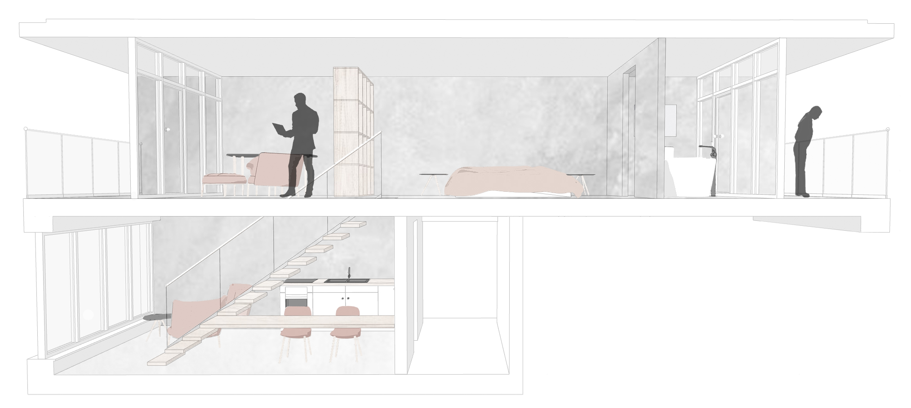
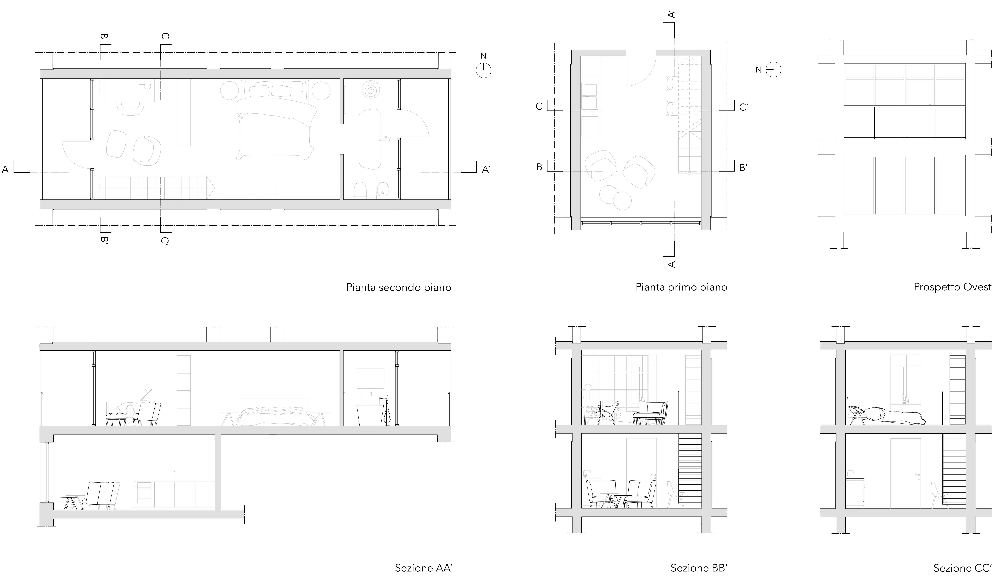
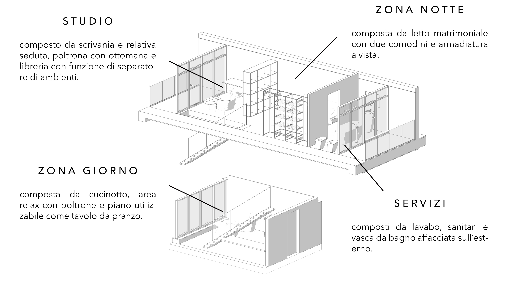

I N F O R M A Z I O N I
U R B A N S U I T E
48th West St, 1 - 10004 New York (NY)
t e l : 212 9577556
m a i l : concretehotel@ny.usa
N e w Y o r k C i t y



La suite d’albergo è stata pensata per essere collocata all’interno di un hotel situato in una città metropolitana, crocevia di culture assai diverse tra loro.
E’ questo il principale motivo che ha portato alla realizzazione di uno spazio estremamente semplice e minimale; texure, materiali e colori riprendono e contemporaneamente contrastano l’atmosfera urbana accostando colori pastello e essenza chiara al cemento e la lamiera di metallo.
La suite si compone di quattro ambienti principali; la zona giorno, al piano inferiore, è collegata alle altre attraverso un’esile scala dal parapetto interamente vetrato, mentre al piano superiore, delimitati con soluzioni poco invasive, i tre ambienti si snodno all’interno di un open space.
U R B A N S U I T E
48th West St, 1 - 10004 New York (NY)
t e l : 212 9577556
m a i l : concretehotel@ny.usa